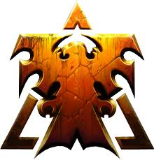

StarCraft is a military science fiction media franchise created by Chris Metzen and James Phinney and owned by Blizzard Entertainment. The series, set in the beginning of the 26th century, centers on a galactic struggle for dominance among three species
Upwhat is SC ? :
-
history
-
story
posted by wikipidia
races in sc :
-
zerg
.jpg) posted by starcraft fandom
posted by starcraft fandom
-
protoss
.jpg)
posted by starcraft fandomThe protoss, bereft of their gods (as they viewed the xel'naga), fell into the Aeon of Strife, a massive generations-long civil war. The mystic Khas, using the power of xel'naga artifacts called khaydarin crystals, reforged the protoss psionic link, which he called the Khala, and helped heal their racial wound. The sanity of the protoss was restored. The new protoss society divided itself into three castes – the Judicator Caste which consisted of religious leaders, controlled by the Conclave; the Templar Caste, the warriors who protected the people; and the Khalai Caste, which provided laborers and artisans. The protoss used much xel'naga technology. The protoss expanded their influence over many worlds formerly controlled by the xel'naga, and both protected and manipulated lesser races according to their philosophy of Dae'uhl. When the terrans arrived in the Koprulu sector, in the shadow of protoss space, the protoss secretly protected them too. Shortly before the Great War, the protoss became aware of the zerg, another race modified by the xel'naga. The zerg had secretly begun infesting a number of terran worlds. Executor Tassadar of the Templar Caste was ordered to take his fleet and purify the most heavily-infested world, Chau Sara. Tassadar followed his orders – sparking panic in the Terran Confederacy – but when ordered to purify the next world, Mar Sara, he refused, as he believed the terrans there still stood a chance against the zerg.
Up -
terran

posted by starcraft fandomThe humans of Earth fell under the control of the United Powers League in 2229. The new government believed in the "divinity of mankind" and worked to eliminate anyone who had undergone genetic engineering or used non-essential cybernetic equipment. Government forces also cracked down on criminals, religious people, political activists and other "dissidents". About forty years later, scientist Doran Routhe collected thousands of such prisoners onto four supercarriers as part of a colonization project. The prisoners were cryogenically frozen and supplied with materials needed to found colonies, including ATLAS, a revolutionary new AI. However, the ships sped right past their target planet. During the journey, ATLAS detected a relatively high rate of mutations leading to psionic powers in the prisoners, sending the information back to Routhe. The lost ships ended up in the Koprulu sector after three decades of travel, approximately two hundred years ago. The new terran colonists settled the worlds of Tarsonis, Moria and Umoja. The colonists of Tarsonis had access to ATLAS and would form the most powerful of the three civilizations – the Terran Confederacy. The Confederacy engaged in economic warfare with the military of the Morian colony, the Kel-Morian Combine, continually stealing their mining claims. Ten years before the Great War, this eventually broke out into the Guild Wars in 2485. The two sides fought for almost four years before the Confederacy claimed victory. The Confederacy mistreated its colonies, and eventually its most prosperous one, Korhal IV, rebelled against it. The Confederacy killed the rebel leader, Angus Mengsk. However, this action was a mistake, since it put his genius son, Arcturus, in charge. The younger Mengsk immediately began a series of bombings and assassinations. When Mengsk was visiting the allied Umojan Protectorate, the Confederacy struck Korhal IV with a massive nuclear blast, destroying all life on its surface. Mengsk, now calling his rebel movement the Sons of Korhal, continued a guerrilla-style struggle with what few forces remained under his command. In his first mission against the Confederacy, he raided a secret installation, rescuing a ghost, Sarah Kerrigan, and becoming aware of secret experiments with newly discovered xenomorphs.
Up gameplay:
-
soundtraks
posted on youtube
-
pro-games
posted on youtube
The story focuses on the activities of three species in a part of the Milky Way known as the Koprulu Sector. Millennia before any of the events of the games, a species known as the Xel'Naga genetically engineer the Protoss and later the Zerg in attempts to create pure beings. These experiments backfire and the Xel'Naga are largely destroyed by the Zerg. Centuries before the beginning of StarCraft in 2499, the hardline international government of Earth, the United Earth Directorate (UED), commissions a colonization program as part of a solution to overpopulation, however the computers automating the colony ships malfunction, propelling the Terran colonists far off course to the edge of Protoss space. Out of contact with Earth, they form various factions to maintain their interests. Intrigued by the behavior and mentality of the Terrans, the Protoss remain hidden to examine the humans, while protecting them from other threats without their knowledge. The Zerg, however, target the Terrans for assimilation to harness their psionic potential, forcing the Protoss to destroy tainted Terran colonies to contain the Zerg infestation.
Up.jpg)
The zerg are a biologically-engineered species and the second (after the protoss) to be engineered by the xel'naga. Possessing a purity of essence, the zerg were originally a race of worm-like parasites which over time could "absorb" the genetics of their victims. They were controlled by the xel'naga-crafted Overmind, which broke contact with the xel'naga and eventually spurred the Zerg Swarm into destroying its masters, stealing their knowledge. The Zerg Swarm formed into a hierarchy, led by the immortal Overmind, the immortal cerebrates underneath it, and the overlords. The modern Zerg Swarm emerged as a collection of breeds, capable of living in harsh conditions – most were adapted for combat. The Overmind became aware of the protoss and was determined to assimilate them into its own species. Upon discovering the terrans, it intended to assimilate their psionic potential to help it in its conquest of the protoss. When the zerg overwhelmed Chau Sara, the protoss responded by destroying all life on the planet's surface. By then, the zerg had already infested numerous other terran worlds. The zerg prepared to fight a war with the protoss, leaving the terrans trapped between them.
Up
terran soundtraks :
zerg soundtrack :
protoss soundtrack:
Up